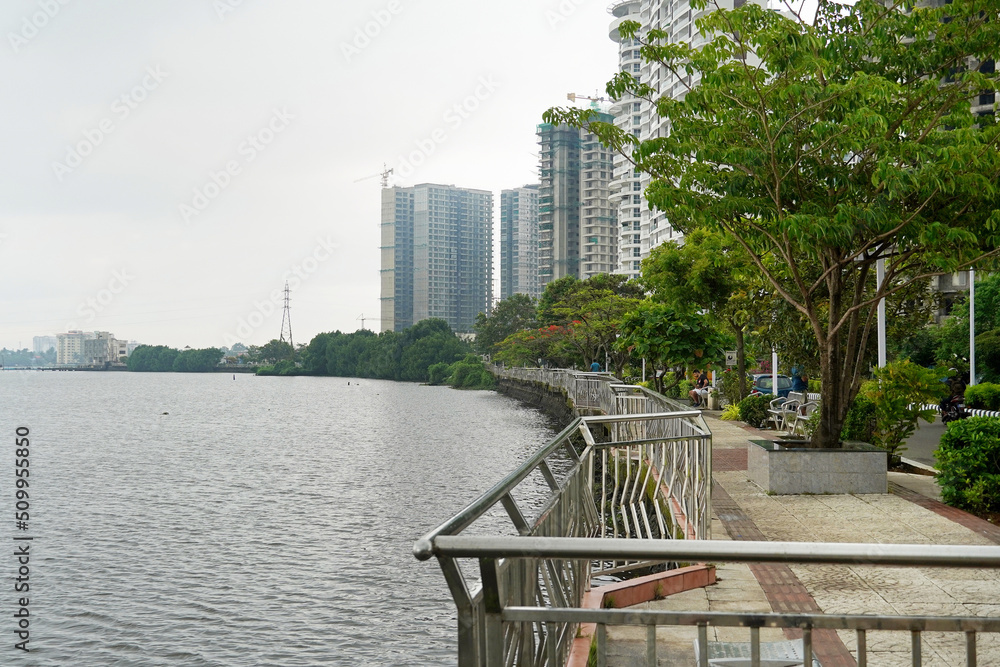
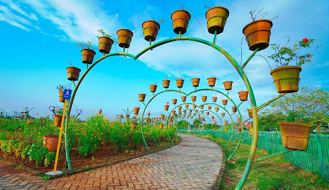

Ernakulam
Ernakulam is the central business district of the city of Kochi, Kerala, India. It is the namesake of Ernakulam district. The eastern part of Kochi city is mainly known as Ernakulam, while the western part of it after the Venduruthy Bridge is called as Western Kochi
Explore more
Thrissur
It is the third largest urban agglomeration in Kerala after Kochi and Kozhikode, and the 21st largest in India.The city is built around a 65-acre hillock called the Thekkinkaadu Maidaanam which seats a large Hindu Shiva Temple
Explore more

Malappuram
Malappuram is a city and the headquarters of the Malappuram district in Kerala, India. It is the 4th largest urban agglomeration in Kerala and the 20th largest in India. The city is spread over an area of 158.20 km2 including the surrounding suburban areas
Explore more